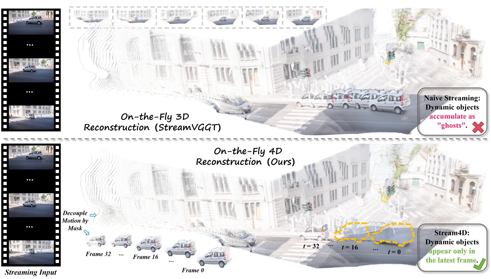
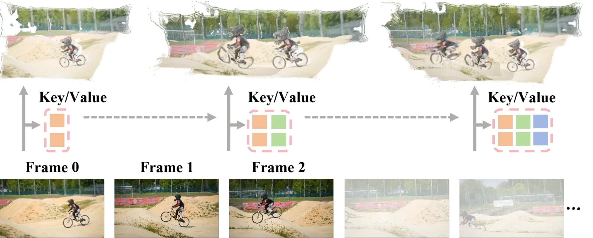
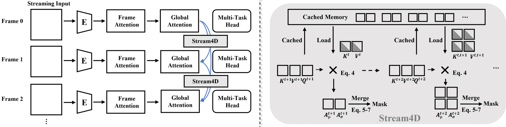
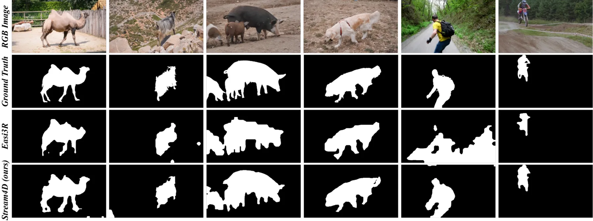
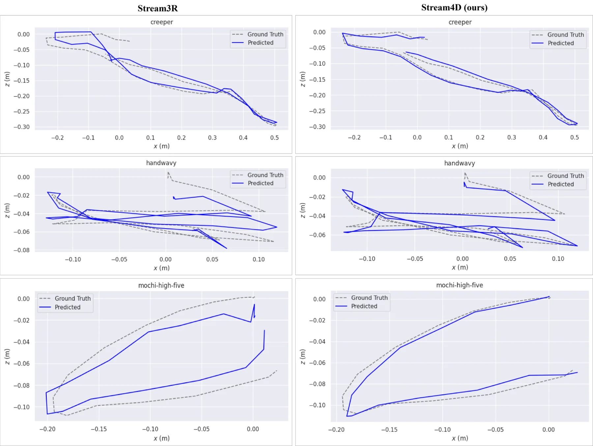

Stream4D：用因果 KV-Cache 注意力做免训练运动解耦的流式 4D 重建
Stream4D: Streaming 4D Reconstruction with Training-free Motion Decoupling via Causal KV-Cache Attention
核心机制是把“动态信息进入历史”的通道——KV cache 的 key——当作可控变量：用 (1-μ)·σ 的注意力统计找动态 token，融合深度前景先验后生成掩码，再对缓存 key 软降权。DAVIS-all 平均 IoU 43.06，比最强流式基线 StreamVGGT 高 9.86 点，但离离线 VGGT4D 的 50.75 仍有明显差距；DyCheck 上 ATE 0.014（比 Stream3R 低 6.7%），RRE 只低 1.1%，说明位姿收益主要来自少数大幅漂移序列。
DAVIS-all J_M
vs StreamVGGT
DyCheck ATE
latency @200 frames
作者、单位与技术谱系 · Research context
作者与单位
研究脉络
- StreamVGGT（Zhuo et al., 2025）方法基座关系：本文默认主干：因果注意力 + KV cache 的流式几何 Transformer，Stream4D 在其上插入掩码模块而不改架构。[论文 §1/§2 与参考文献]
- Stream3R（Lan et al., 2025）方法基座关系：第二个可插拔主干，用来证明方法不绑定单一架构；位姿对照的主基线也是它。[论文摘要与 Table 2]
- VGGT4D / Easi3R（2025）问题前作关系：同为免训练动态分割，但分别依赖全局双向注意力与相邻帧成对统计，本文的推进点是把线索搬到因果流式约束下。[论文 §2 相关工作]
合作网络
- 西北工业大学 ↔ vivo BlueImage LabNorthwestern Polytechnical University → vivo BlueImage Lab关系：共同署名[arXiv HTML 作者块]
- Stream4D → StreamVGGTStream4D → StreamVGGT (Zhuo et al., 2025)关系：技术依赖（主干复用）[论文 §3.1 与 Table 2]
- Stream4D → Stream3RStream4D → Stream3R (Lan et al., 2025)关系：技术依赖（可插拔主干）[论文摘要与 Table 2]
作者、单位与通讯关系取自 arXiv HTML 作者块；主干依赖来自方法章节的显式描述。除共同署名与技术依赖外，未发现可公开核实的导师/师生或实验室隶属关系，故不写入。
方法本质拆解 · What actually changed
是不是微调？
不是。方法完全免训练：StreamVGGT / Stream3R 主干权重冻结，不加数据、不改架构，只引入阈值与层权重等测试时超参。论文在摘要与贡献里反复强调 training-free 与 pluggable，实验也只报告在预训练流式主干上的直接插入结果。
加了什么先验与约束？
两处先验：因果注意力的 token 统计（低均值、高方差判为动态）与单目深度图给出的前景假设（运动物体更近）。约束作用在缓存 key 与损失权重上：软掩码压低动态 key 的注意力权重，静态区光度/几何损失按 (1-M) 加权，只在置信静态点上更新点云。
推理时到底做了什么？
每来一帧只做一次前向：先算注意力统计与深度先验融合出掩码，再用掩码改写缓存 key，然后解码出点图与位姿，最后把 (K,V) 追加进 cache。没有全局 BA、没有第二阶段优化、也没有对过去帧的重新处理，因此历史上限只受 cache 长度影响。
方法本质是什么？
本质是把“动态信息污染历史”的通道（cache key）当作可估计、可降权的变量，用注意力统计估计每个 token 的历史可信度。它改变的是历史聚合的权重分布，而不是几何求解器；因此能抑制 ghosting、小幅改善位姿，但无法把流式精度补到离线水平。
输入单目视频流与冻结的因果主干，在 KV cache 的 key 上按注意力显著性与深度先验做软降权，阻止动态特征写入历史，直接换来分割、位姿的小幅改善与 ghosting 抑制。

结论与问题Conclusion & Motivation
核心结论
Stream4D 的结论很具体：因果 Transformer 的 KV cache 里已经带着“哪些 token 在动”的统计信号，因此动态场景的流式重建不需要额外训练一个分割器。作者用多层注意力统计 (1-μ)·σ 加深度前景先验得到掩码，再对缓存 key 做软掩码，DAVIS-all 平均 IoU 43.06、DAVIS-2016 43.39，分别比最强流式基线 StreamVGGT 高 9.86 与 8.48 点。位姿侧收益要小得多：DyCheck 上 ATE 0.014 对 0.015（−6.7%）、RTE 0.017 对 0.018（−5.6%）、RRE 0.539 对 0.545（−1.1%），作者自己把这项改进描述为“consistent improvements”，但 1.1% 的旋转误差差异没有给方差，不能当成稳健结论。
动机与问题
论文指出的错配是：StreamVGGT、Stream3R 这类因果流式主干为了效率只让当前帧看历史帧，但它们默认场景静态；一旦有运动物体，光度一致性和极线几何同时失效，位姿被带偏，更糟的是动态特征会随 KV cache 一次次写入历史，形成沿轨迹堆叠的 ghosting。已有的免训练动态分割办法都不适配：VGGT4D 依赖全局双向注意力，必须看完整段视频；Easi3R 只用相邻帧的成对统计，时间一致性差、边界易碎；而在因果约束下浅层注意力本身会失效，所以“把离线方法搬到流式”不是简单截断历史就能成立。
方法Method
方法总览
整体是“冻结主干 + 三个测试时模块”。第一，注意力显著图：当前帧 query 对缓存 key 求注意力，按 token 统计均值与方差，动态物体表现为低均值、高方差，于是 S=(1-μ)·σ，再对浅/中/深多层加权（权重偏向中层语义）求和。第二，深度先验补盲：用预测深度图提供前景假设，处理遮挡与无纹理区域，得到最终二值掩码。第三，软 key 掩码：把掩码作用到缓存 key 上（只在前几个解码层，低层几何特征主导处），并维护 mask cache 保证跨帧一致，使动态区域在历史聚合中被降权而不是被硬删除。
关键技术细节
论文的关键取舍是“软”而不是“硬”：如果直接把动态 token 从 cache 删除，历史长度会随运动物体数量波动，且被误判的静态区域无法恢复；软掩码保留 key 但压权重，误判的代价更小。掩码同时进入静态区几何约束：光度与几何一致性损失按 (1-M) 加权，只在高置信静态点上做增量点云插入。需要注意，正文没有给出掩码阈值、层权重 w_l、历史帧集合 H_t 的具体选择规则与数值，也没有报告掩码在低动态序列上的误检率，这些都属于复现时必须自己补的部分。

实验Experiments
实验设置
分割在 DAVIS-2016、DAVIS-2017 与 DAVIS-all 上按官方协议评测，指标是平均 IoU（J_M）与 IoU recall（J_R）；所有在线方法严格单遍、禁止访问未来帧。位姿与 4D 重建在 DyCheck 上评测 ATE/RTE/RRE，流式方法一律因果单遍。效率实验在单张 A100、512×384 分辨率下扫 N=10/20/50/100/200 帧。对照分两层：流式基线 CUT3R、Stream3R、StreamVGGT（作者为它们加装分割头以便比较），以及离线方法 DUSt3R、MonST3R、DAS3R、VGGT4D、Easi3R 作为上界；Easi3R_online 保留原实现、只关掉历史帧访问，用来隔离“因果”这一项的影响。
实验数字与比较
分割：DAVIS-2016 J_M 43.39 对 StreamVGGT 34.91（+8.48），DAVIS-2017 46.45 对 37.33（+9.12），DAVIS-all 43.06 对 33.20（+9.86）；但同表的离线 VGGT4D 在 DAVIS-2016 是 62.12、DAVIS-all 50.75，说明流式与离线之间仍有十几到二十点的差距。位姿：DyCheck ATE 0.014 对 Stream3R 0.015、RTE 0.017 对 0.018、RRE 0.539 对 0.545，而离线 VGGT4D 的 ATE 是 0.010、SpatialTrackerV2 是 0.011。效率：N=100 时 Easi3R 需 260.0 s 并在 200 帧前 OOM；N=200 时 Stream4D 93.1 s、StreamVGGT 84.1 s，约 10% 额外开销，增长近线性。
消融/失败边界
这是本篇最需要打问号的地方：第 4 节开头写实验包含“followed by ablations”，但 arXiv HTML 正文没有独立的消融表，也没有“去掉深度先验/去掉软掩码/去掉多层聚合”的对照，因此三个模块各自的贡献无法从正文核实，只能在附录或后续版本里补。可确认的失败边界来自主表：分割仍远低于离线方法（DAVIS-all 43.06 对 50.75），位姿仍落后离线（ATE 0.014 对 0.010），且 RRE 只改善 1.1%——若你的场景以旋转主导的漂移为主，这个模块大概率不解决问题。
局限与迁移Limitations & Transfer
局限与待核验
作者明确承认的局限是：聚合目前主要依赖注意力统计与深度先验两类线索，跨尺度时间模式与语义显著性是“future work”；他们也没有做动态物体本身的重建，只重建静态背景。我们待核验的是：软掩码的强度与阈值如何选、层权重 w_l 是否对所有主干都成立、H_t 的自适应规则在多长序列上稳定；另外所有效率数字都来自 A100 与 512×384，没有 Jetson/边缘设备数据，也没有报告掩码计算的额外显存。
与你研究路线的关系
可迁移的是“写入历史前先降权”的位置选择：我们现有的 VIO/地图更新是在几何求解器里用鲁棒核抗差，但被污染的观测仍然进了地图；Stream4D 提示把门控提前到“历史缓存写入”这一步，等价于给关键帧/地图点插入加一个由观测一致性导出的权重。下一步实验：在自有动态序列上做最小三组对照——静态假设、深度阈值掩码、注意力显著性掩码——统一记录 ATE/RTE 与 ghosting 区域面积；并刻意检查旋转误差，因为论文这里只有 1.1% 的改善，若我们的场景也复现不出旋转收益，就不值得为它增加一套掩码管线。





